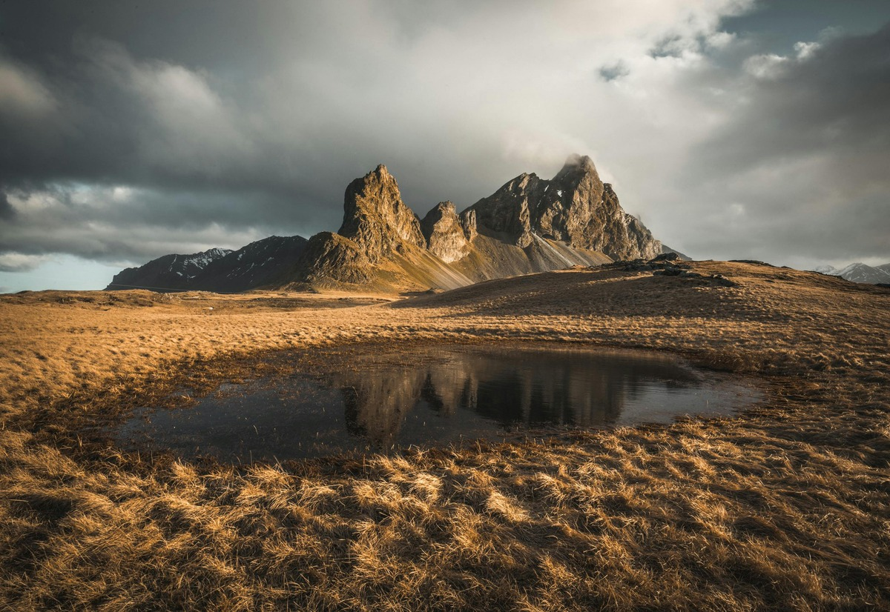

Walking Routes Around Bike King Borders
There are walking routes for everyone here. Around Bike King Borders , you can take an easy stroll around ponds near the café, follow the stories of people who lived here in prehistoric times, or take a hike into the hills for some superb views.
Droncar
Droncar has an easy access route from the picnic site that’s firm and level, with no obstacles. If you’re looking for something more energetic, follow the burn further up the valley or find the remains of Droncar Tower and an Iron Age hill fort.
Droncar is a large forest that drapes the hillsides on the south side of the Tweed Valley. The trails are great for tranquil walks, gentle cross-country rides and relaxed horse riding. There are lovely views up the Tweed Valley towards Tressforest. Look out for red squirrels and a wealth of birdlife. Droncar Tower, built in the 1500s, is now a ruin – but bats think it’s an ideal home. Don’t miss the site of the Iron Age fort at Castle Knight – the walls are built on top of a layout some 2,000 years old.
Muirdac
Muirdac is a hidden gem, a quiet forest close to Peebles with some charming trails through open woodland. It can be particularly good early in the morning, when mist hangs in the valley below. Muirdac Hill gives commanding views over Peebles and Tressforest Forest. The scenery is at its best on misty mornings or in the low light of early evening. It’s an ideal place for wildlife spotting. Keep an eye – and an ear – open for small birds such as siskins, warblers and crossbills, or greater spotted woodpeckers. If you’re very lucky you’ll catch a glimpse of tawny owls fleeting through the trees at dusk or red deer bouncing through the trees.
Leethorn
Enjoy a picnic and a stroll at Leethorn: the meadows here are important for butterflies, and we manage the land so the conditions are just right for them. Leethorn, there are walks, wildlife, stunning views and quirky history to discover at this quiet forest. The grassy slopes below the car park are just right for butterflies like the Small Copper and the Northern Brown Argus.
Airy
If you’re looking for a bit of a challenge, head to Airy. One of the Borders’ classic hill routes leads through the forest and up to the Three Renbreths, tall cairns that stand sentinel over the moors. Allow at least five hours for the trip.